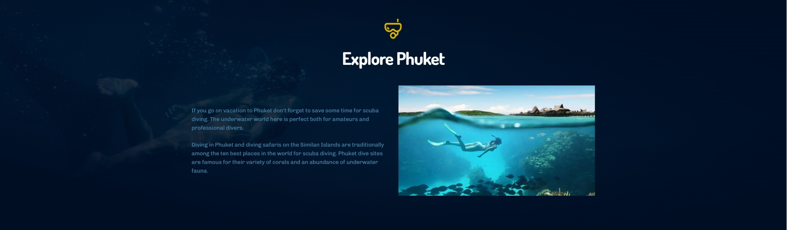

If you go on vacation to Phuket don't forget to save some time for scuba diving. The underwater world here is perfect both for amateurs and professional divers.
Diving in Phuket and diving safaris on the Similan Islands are traditionally among the ten best places in the world for scuba diving. Phuket dive sites are famous for their variety of corals and an abundance of underwater fauna.
